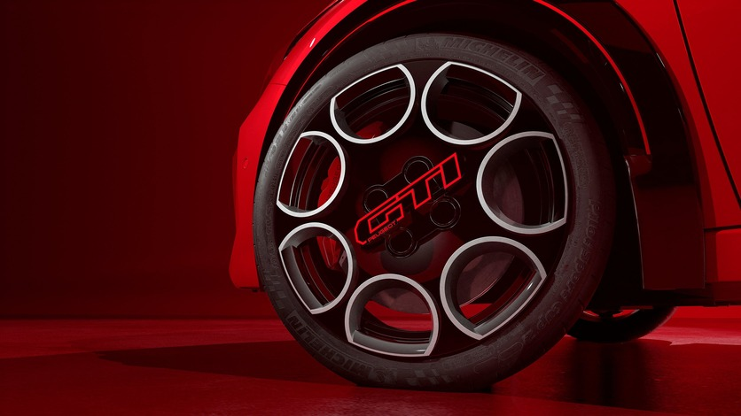
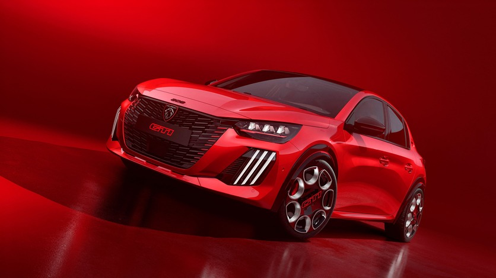
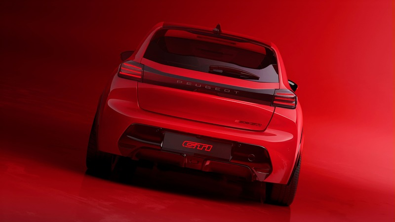
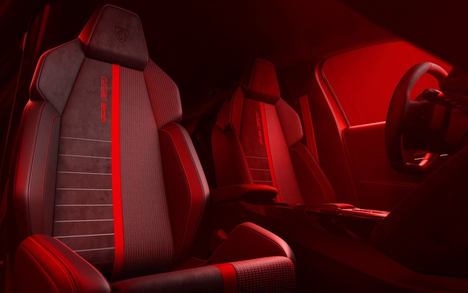
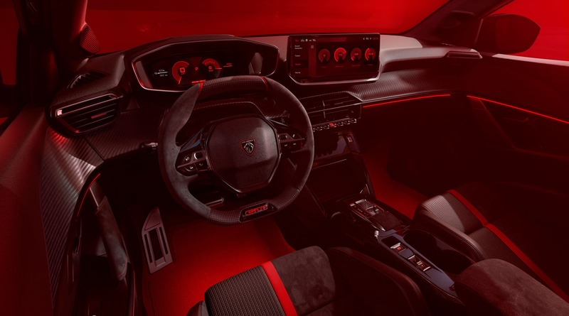
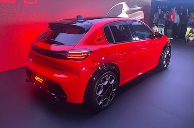
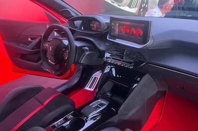
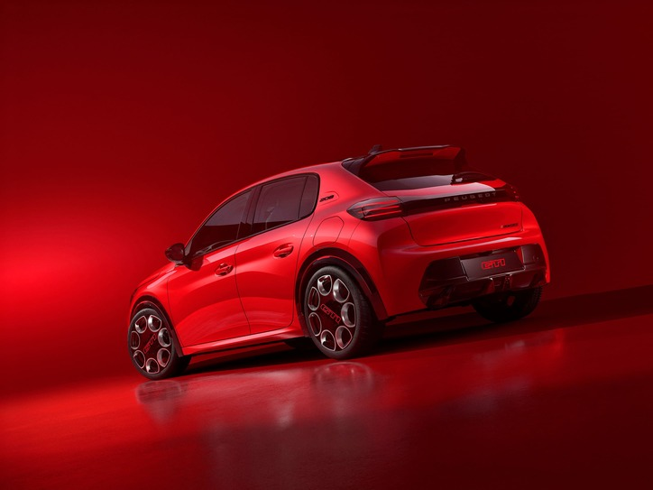

100% ÉLECTRIQUE

40 ans après la légendaire 205 GTi, le badge renaît en 100% électrique.




Chaque angle raconte une histoire


Technologie issue du WEC, tableau de bord 3D et finitions haut de gamme.

L'électrique qui a du caractère.
peugeot.com